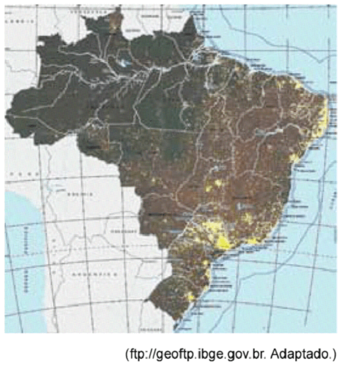
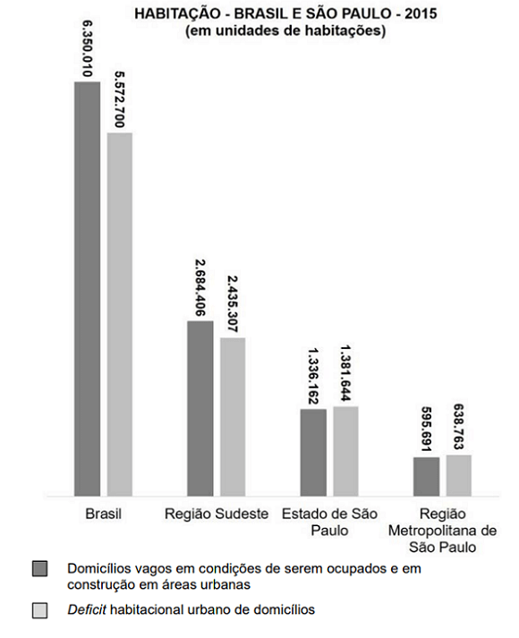
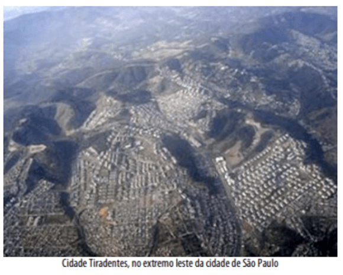

Conteúdo:
Questão 01
(IFPE 2015) É o processo através do qual ocorre a transferência da população do campo para as cidades, tornando-as mais populosas que as áreas rurais. É associado, de forma geral, ao processo de industrialização e, no Brasil, ao longo do século XX, ocorreu de forma rápida e, na maioria das vezes, sem planejamento, o que tem provocado diversos problemas relacionados à falta de infraestrutura. Qual processo foi descrito?
a) Êxodo urbano.
b) Urbanização.
c) Conurbação.
d) Desmetropolização.
e) Periferização.
Questão 02
(IFMT 2015) No Brasil, o processo de urbanização deslanchou após a Segunda Guerra Mundial, como resultado da modernização econômica e do grande desenvolvimento industrial brasileiro, ocorrido a partir da década de 1950. Sobre a urbanização brasileira, marque a alternativa INCORRETA.
a) O processo de urbanização brasileira apoiou-se essencialmente no êxodo rural, que envolve dois condicionantes interligados: a repulsa à força de trabalho do campo e a atração da força de trabalho para a cidade.
b) Os maiores níveis de urbanização estendem-se de São Paulo e Rio de Janeiro para os estados de minas Gerais, Goiás, Mato grosso do Sul, Paraná e Rio Grande do Sul, abrangendo quase todo o Centro-Sul, enquanto que os menores níveis de urbanização aparecem em estados nordestinos e da Amazônia.
c) A urbanização do Centro-Oeste brasileiro foi impulsionada pela fundação de Brasília, em 1960, e pelas rodovias de integração nacional que interligaram a nova capital com o Sudeste, de um lado, e a Amazônia do outro.
d) A violência urbana, nas cidades brasileiras, está relacionada a uma série de fatores socioeconômicos, como: o subemprego, o déficit de moradia e a falta de assistência médica.
e) A urbanização brasileira representa a passagem do Brasil para o estágio de país desenvolvido e moderno. Isso, porque o aumento da população nas cidades foi acompanhado pelo planejamento urbano, evitando assim problemas socioeconômicos.
Questão 03
(UEA AM 2015) Analise o mapa.

O mapa revela a conformação de uma rede urbana
a) adensada, indicada pela ocupação do interior.
b) uniforme, percebida pela complexidade das atividades econômicas.
c) irregular, resultado do acesso desigual à eletricidade pública.
d) desigual, expressa nas diferentes densidades demográficas.
e) concentrada, reflexo da ocupação em pequenos centros urbanos.
Questão 04
(FMP 2016)
Para quem é real a rede urbana?
“Na grande cidade, há cidadãos de diversas ordens ou classes, desde o que, farto de recursos, pode utilizar a metrópole toda, até o que, por falta de meios, somente a utiliza parcialmente, como se fosse uma pequena cidade, uma cidade local. A rede urbana, o sistema de cidades, também tem significados diversos segundo a posição financeira do indivíduo. Há, num extremo, os que podem utilizar todos os recursos aí presentes (...). Na outra extremidade, há os que nem podem levar ao mercado o que produzem, que desconhecem o destino que vai ter o resultado do seu próprio trabalho, os que, pobres de recursos, são prisioneiros do lugar, isto é, dos preços e das carências locais”.)
SANTOS, Milton. O espaço do cidadão. São Paulo: Nobel, 1987. p.112.
a) alienação sociopolítica dos consumidores.
b) segregação socioespacial dos habitantes.
c) gentrificação das áreas centrais.
d) periferização das atividades produtivas.
e) verticalização de bairros suburbanos.
Questão 05
(UNICAMP 2019)

(Fonte: Déficit Habitacional no Brasil, 2015. Belo Horizonte: Fundação João Pinheiro, 2018.)
Com base em seus conhecimentos e nos dados do gráfico, assinale a alternativa correta.
Alternativas
a) O déficit habitacional no Brasil vem sendo enfrentado com a construção de novos domicílios, o que tem resolvido satisfatoriamente a questão da moradia.
b) Os dados do gráfico confirmam que, em qualquer área do território brasileiro, há mais domicílios vagos em condições de serem ocupados que déficit habitacional.
c) É muito provável que todas as classes sociais moradoras nas cidades no Brasil sejam igualmente atingidas pelo fenômeno urbano de déficit habitacional.
d) A correlação entre domicílios vagos e déficit habitacional explica-se, em grande medida, pela especulação imobiliária, que mantém imóveis fechados.
Comentário:
A alternativa D está correta: o problema de acesso à moradia para uma ampla parcela da população brasileira deve-se à grande quantidade de imóveis vagos no país, muitos deles ociosos pela atitude especulativa de donos, que preferem deixá-los fechados a alugá-los por preços mais baixos. Esse fato afeta a população mais pobre, que não tem renda suficiente para acesso a moradia através do aluguel ou da compra.
A alternativa A está errada porque as políticas habitacionais estatais não conseguem atender plenamente a população com necessidade de moradia, prolongando o problema do déficit habitacional brasileiro.
A alternativa B está incorreta porque o gráfico indica que nem todas as áreas urbanas do país têm mais imóveis vagos do que déficit; isso não ocorre, por exemplo, no Estado de São Paulo e na Região Metropolitana de São Paulo.
A alternativa C está incorreta porque o déficit habitacional brasileiro atinge sobretudo as populações de baixa renda, diferentemente do que aponta a alternativa ao afirmar que todas as classes sociais são atingidas da mesma maneira pela falta de acesso a moradia.
Questão 06
(ENEM 2021)
“A vida das pessoas se modifica com a mesma rapidez com que se reproduz a cidade. O lugar da festa, do encontro quase desaparecem; o número de brincadeiras infantis nas ruas diminui — as crianças quase não são vistas; os pedaços da cidade são vendidos, no mercado, como mercadorias; árvores são destruídas, praças transformadas em concreto. Por outro lado, os habitantes parecem perder na cidade suas próprias referências. A imagem de uma grande cidade hoje é tão mutante que se assemelha à de um grande guindaste, aliás, a presença maciça destes, das britadeiras, das betoneiras nos dão o limite do processo de transformação diária ao qual está submetida a cidade”.
CARLOS, A. F. A. A cidade. São Paulo: Contexto, 2011 (adaptado).
No contexto das grandes cidades brasileiras, a situação apresentada no texto vem ocorrendo como consequência da
a) manutenção dos modos de convívio social.
b) preservação da essência do espaço público.
c) ampliação das normas de controle ambiental.
d) flexibilização das regras de participação política.
e) alteração da organização da paisagem geográfica.
O espaço urbano é uma paisagem geográfica dinâmica, porque reflete as contínuas transformações da sociedade. Por exemplo, um dos processos que altera as feições das paisagens urbanas é a gentrificação, que, através do avanço da especulação imobiliária, resulta na intensificação de espaços fechados e verticalizados, o que reduz o convívio social.
Questão 07
(UNESP 2022) No aniversário de 20 anos do Estatuto da Cidade, é fundamental refletir sobre o seu legado nas cidades brasileiras. Seu grande avanço consiste em definir instrumentos claros para um planejamento urbano com propósito social e calcado na gestão democrática da cidade, viabilizando, na prática, o reconhecimento da função social da propriedade.
(https://diplomatique.org.br, 06.07.2021. Adaptado.)
Consiste um exemplo de descumprimento da função social da propriedade nas cidades
a) a concentração de linhas de transporte público nas periferias, em detrimento do grande número de trabalhadores que moram nas áreas centrais.
b) a presença de imóveis ociosos em áreas com boa infraestrutura coexistindo com a realidade precária das periferias.
c) a expansão da distribuição do saneamento básico em áreas regularizadas, em contraste com as falhas no acesso a esses serviços em áreas irregulares.
d) a realização da coleta seletiva de lixo em áreas regularizadas convivendo com a permanência de lixões em áreas irregulares.
e) a centralização dos empregos em áreas com boa infraestrutura, em detrimento da população desempregada que reside nas periferias.
A especulação imobiliária é a causa da manutenção de um grande número de imóveis desocupados, em áreas bem servidas pela infraestrutura urbana.
Questão 08
(ENEM 2020) A ampliação das áreas urbanizadas, devido à construção de áreas impermeabilizadas, repercute na capacidade de infiltração das águas no solo, favorecendo o escoamento superficial, a concentração das enxurradas e a ocorrência de ondas de cheia. A urbanização afeta o funcionamento do ciclo hidrológico, pois interfere no rearranjo dos armazenamentos e na trajetória das águas.
CHRISTOFOLETTI, A. Aplicabilidade do conhecimento geomorfológico nos projetos de planejamento. In: GUERRA, A. J. T.; CUNHA, S. B. (Org.). Geomorfologia: uma atualização de bases e conceitos. Rio de Janeiro: Bertrand Brasil, 2008.
Considerando esse contexto, que fator contribui para a diminuição das enchentes em áreas urbanas?
a) Pavimentação das vias.
b) Criação de espaços verdes.
c) Verticalização das moradias.
d) Adensamento das construções.
e) Assoreamento dos canais de drenagem.
Questão 09
(UNCISAL 2010) Nos grandes centros urbanos, a atividade industrial e o uso de automóveis, embora sejam fundamentais ao modo de vida contemporâneo, têm causado efeitos danosos ao homem das grandes cidades. Dentre os efeitos, pode-se destacar:
a) o aumento de raios ultravioleta.
b) a morte de animais e vegetais.
c) a poluição das águas.
d) o derretimento das calotas polares.
e) a formação de ilhas de calor.
Questão 10
(FGV-RJ 2021)
“Nas últimas décadas, a cidade de São Paulo cresceu dentro de uma lógica desordenada e gerou um perverso apartheid urbano. Os mais pobres foram expulsos dos bairros localizados junto à região central e empurrados para regiões cada vez mais distantes. Estima-se que algo como 2.500 bairros irregulares e 1600 favelas tomam conta da periferia, servindo de moradia para metade da população paulistana. Acabar com o cinturão de pobreza que cerca São Paulo é o grande desafio do futuro”.

SUPERINTERESSANTE. São Paulo, 31 de outubro de 2016. Adaptado.
Sobre a periferização da população da cidade de São Paulo, analise as afirmações a seguir.
I. Um dos principais problemas da periferia metropolitana é o saneamento básico, como a precariedade dos serviços de coleta de resíduos sólidos e de tratamento de esgotos, o que reforça o vínculo entre pobreza e más condições sanitárias.
II. O padrão de urbanização da periferia processou-se sem considerar a topografia, a declividade das encostas e o sistema de drenagem, o que implica o aumento dos fatores de risco para a ocorrência de desastres ambientais.
III. A periferização da população aumentou o tempo gasto nos deslocamentos casa/trabalho/casa, o que gera intensos fluxos de circulação que sobrecarregam os sistemas de transportes e agravam a poluição do ar.
Está correto o que se afirma em
a) II, apenas.
b) I e II, apenas.
c) I e III, apenas.
d) II e III, apenas.
e) I, II e III.